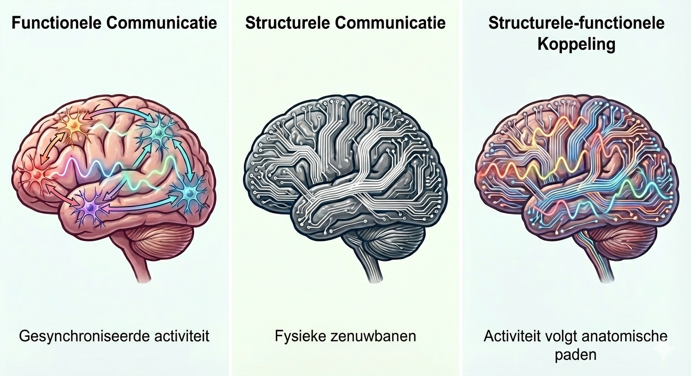

Subtypes van depressie worden zichtbaar wanneer we naar de koppeling kijken tussen functionele en structurele verbondenheid in het brein. Deze koppeling - en meer bepaald die tussen specifieke breinnetwerken - zegt meer over cognitieve klachten dan één type verbondenheid op zich.
Het aantal depressiediagnoses blijft wereldwijd maar toenemen (Chen et al., 2025). Ook draagt deze aandoening bij aan het grootste aandeel van levensjaren gespendeerd met een beperking wanneer het vergeleken wordt met alle andere mentale aandoeningen (Choi et al., 2024). Bovendien is depressie niet homogeen: er is enorme variabiliteit in symptomen, waaronder ook cognitieve klachten (Little et al., 2024). Deze heterogeniteit vormt een akelig probleem voor de klinische praktijk, omdat het de voorspelling van ziekteverloop en behandelingseffecten bemoeilijkt.
Een oplossing hiervoor is mensen gediagnosticeerd met depressie onderverdelen in subtypes die elk minder heterogeen zijn qua cognitieve klachten en dus betere voorspellingen kunnen bieden. Maar hoe kunnen we deze subtypes best definiëren?
Ons vermogen tot nadenken, voelen en handelen, kortom cognitie, wordt
mogelijk gemaakt door de communicatie tussen verschillende hersengebieden. Het zijn verstoringen in deze communicatie die
waarschijnlijk leiden tot cognitieve klachten.

Ons brein kan opgedeeld worden in gebieden die nauwer met elkaar communiceren dan met andere gebieden. Zo'n groep van regio’s noemen we een netwerk. Er bestaan 2 voornaamste manieren van communicatie/verbondenheid binnenin en tussen deze netwerken:
Een andere manier om deze netwerken en hun verbondenheid te beschouwen is door te achterhalen hoe goed de functionele en structurele communicatie op elkaar aansluiten, of anders gezegd, hoe goed de functionele verbondenheid "past" bij de structurele bedrading. Dit noemen we structurele-functionele koppeling.
Omdat er interindividuele verschillen bestaan in deze vormen van communicatie en hun koppeling, kunnen mensen worden geclassificeerd tot subtypes van depressie die elk minder cognitief heterogeen kunnen zijn dan de algemene depressie groep, en dus een verklaring kunnen bieden voor de variabiliteit in cognitieve klachten. Dit is precies wat we hebben onderzocht in onze studie, waarbij we een groep van bijna 1000 mensen gediagnosticeerd met depressie hebben geclassificeerd op basis van hun functionele en structurele netwerkcommunicatie en hun structurele-functionele koppeling, en vervolgens hebben gekeken naar hoe deze subtypes verschillen in cognitieve prestaties.
Eerst hebben we binnen elke modaliteit apart geclassificeerd om te bepalen welke modaliteit het beste de cognitieve variabiliteit verklaart. Zo onderscheiden we 6 subtypes, telkens 2 per modaliteit:
Enkel de structurele-functionele koppeling lijkt cruciaal voor het verklaren van cognitieve verschillen. Zo zien we dat de zwak-gekoppelde subtype vrijwel consistent zwakkere cognitieve prestaties vertoont dan het sterk-gekoppelde subtype, terwijl er geen duidelijke verschillen zijn tussen de subtypes op basis van enkel functionele of structurele netwerkcommunicatie.
Als we kijken binnen de zwak-gekoppelde subtype, zien we dat hun breinregio's juist meer functioneel communiceren dan die van de referentiegroep. Structureel daarentegen zien we een verminderde connectiviteit in vergelijking met de referentiegroep. Voor de sterk-gekoppelde subtype zien we juist het tegenovergestelde patroon. De netwerken verantwoordelijk voor deze verschillen tussen de subtypes zijn juist die dat instaan voor zelfreflectie, zelfbewustzijn en mogelijk ook emotionele regulatie (Dutta et al., 2014). Dit zijn aspecten die sterk gerelateerd zijn aan hoe depressie kan ontstaan en hoe het kan verlopen.
Deze bevindingen ondersteunen het idee dat meer geïntegreerde hersennetwerken (functioneel én structureel) een beschermende factor kunnen zijn tegen cognitieve problemen bij depressie. Ze verschuiven de focus van “één netwerk is sterker of zwakker” naar de vraag hoe goed netwerken samenwerken op functioneel en structureel niveau. Met meer onderzoek kunnen toekomstige interventies beter worden afgestemd op de specifieke netwerkprofielen van individuen.
Niet één netwerk op zich, maar de koppeling tussen functionele en structurele netwerkcommunicatie lijkt cruciaal voor cognitieve kwetsbaarheid bij depressie. Dit opent de deur naar meer gepersonaliseerde en gerichte interventies.